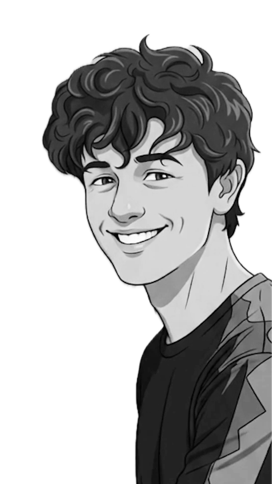

Cinematic Soundscapes & Analog Textures
Browse BeatsForged in the intersection of organic instrumentation and digital manipulation. Logan's foundation was built studying Music Production at Northampton College, refining a minimalist approach to complex emotion.
Currently expanding his creative work at the School of Digital Arts (SODA) at Manchester Metropolitan University, he strips away the unnecessary to reveal the raw, rhythmic core underneath. Every snare is synthesized from scratch, designed for vocalists and filmmakers who demand space, depth, and cinematic gravity.

SORT: NEWEST ARRIVALS